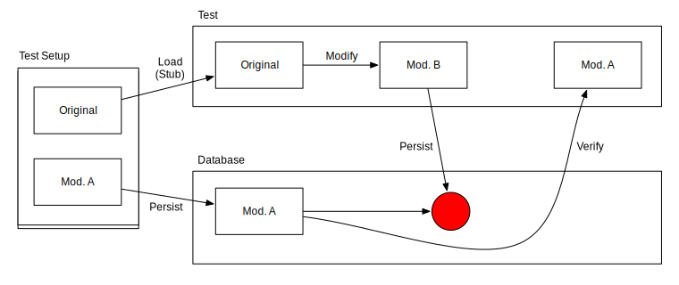
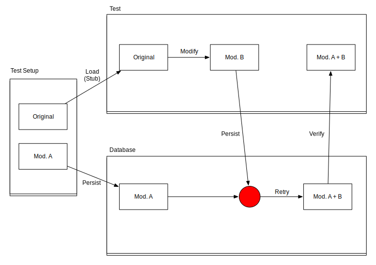

Testing in node.js
Interesting and Helpful Techniques
Nicole Rauch and Andreas Leidig
Background
- Community platform
- 2 main contributors
- Live since August 2013
- About 850 registered members
- Server application running on node.js & mongoDB
- 3-tier Architecture
- Stateless Backend
Workshop Mechanics
We …
- … present a problem we ran into
- … provide a minimal example
You …
- … think about possible solutions (in pairs or triples)
- … can try out your ideas in the code
We …
- … discuss your ideas
- … present our current solution
Problems and solutions are available in sourcecode.
Code is executable, tests can be run.
Please …
- Most examples are tiny and minimalist
and it was hard to get them so small! - Please, no discussions about overengineered solutions to trivial problems
- We can show you the original code if you like …
Laptop Setup Time
Copy the VM from an USB stick - we will give you sticks in a second.
Or
Clone https://github.com/NicoleRauch/NodeTestingTechniques and follow the instructions from the readme.
Remember your two feet
One Language – One Kind of Tests?
Not quite. We have different aspects and runtime environments.
- Simple node.js unit tests.
- Integrated express.js unit tests.
- Integrated tests with a running app (smoke tests).
- Tests against a real
mongodb. - Tests for frontend code.
- HTML tests.
There are good libraries out there. Which one should we choose?
These libraries have different trade-offs and abilities.
Frameworks we use
All tests have the style in common. They are all written in BDD style.
Mochawithmuston the backend. These tests resembleJasminetests.supertestto easily testexpressapplications without starting a full-stack server.requestfor integrative smoke tests.Jasminewithkarmafor the frontend tests
Indirect dependencies
Problem: How to stub dependencies at different layers?
Application Structure

index.js:
var service = require('./membersService');
app.get('/', function (req, res, next) {
service.allMembers(function (err, members) {
res.render('index', { members: members });
});
});
membersService.js:
var store = require('./memberstore');
module.exports = {
allMembers: function (callback) {
store.allMembers(callback);
}
};
memberstore.js:
var persistence = require('../persistence/persistence')('memberstore');
module.exports = {
allMembers: function (callback) {
persistence.list({lastname: 1, firstname: 1}, callback);
}
};
Unit and Integration Tests
Stubbing allows to isolate one or several modules
But how?
node.js "require"
Interesting: require promises to instantiate singleton modules
But: require creates one singleton per import path!
In production (in folder 'lib'):
var service = require('./membersService');
In test (in folder 'test'):
var service = require('../../lib/members/membersService');
Result: Two different instances of membersService! Stubbing not simple.
Proxyquire
Can replace a required module inside a module.
Sounds great – let's try this out!
Unit Testing index.js
Single-layer test:
var membersServiceStub = {
allMembers: function (callback) {
callback(null, [testMember]);
}
};
var app = proxyquire('../../lib/members', {
'./membersService': membersServiceStub
});
it('lists all members', function (done) {
request(app)
.get('/')
.expect(/Peter Miller \(Nickinick\)/, done);
});
Integration Testing
Two-layer test:
var memberstoreStub = {
allMembers: function (callback) {
callback(null, [testMember]);
}
};
var membersServiceStub = proxyquire('../../lib/members/membersService', {
'./memberstore': memberstoreStub
});
var app = proxyquire('../../lib/members', {
'./membersService': membersServiceStub
});
it('lists all members', function (done) {
request(app)
.get('/')
.expect(/Peter Miller \(Nickinick\)/, done);
});
Integration Testing
Three-layer test:
var persistenceStub = function () {
return {
list: function (sortOrder, callback) {
callback(null, [testMember]);
} }; };
var memberstoreStub = proxyquire('../../lib/members/memberstore', {
'../persistence/persistence': persistenceStub
});
var membersServiceStub = proxyquire('../../lib/members/membersService', {
'./memberstore': memberstoreStub
});
var app = proxyquire('../../lib/members', {
'./membersService': membersServiceStub
});
it('lists all members', function (done) {
request(app)
.get('/')
.expect(/Peter Miller \(Nickinick\)/, done);
});
Demo
StubbingIndirectDependencies/problem
What would be a better solution?
Try out
Discuss
Our Solution
We decided to use …
Dependency Injection
Framework: Cool Beans
We define our singleton beans:
{
"membersApp": {"module": "./lib/members"},
"membersService": {"module": "./lib/members/membersService"},
"memberstore": {"module": "./lib/members/memberstore"},
"membersPersistence": {"module" : "./lib/persistence/persistence",
"constructorArgs": { "collectionName": "memberstore" }},
"member": {"module": "./lib/members/member"}
}
We plug them into nconf:
function createConfiguration() {
nconf.defaults({
// ...
beans: new Beans('./config/beans.json')
});
return nconf;
}
And use them in production and test:
var service = require('nconf').get('beans').get('membersService');
The resulting stubbing code is much simpler:
Single-layer test:
beforeEach(function () {
sinon.stub(membersService, 'allMembers', function (callback) {
callback(null, [testMember]);
});
});
Two-layer test:
beforeEach(function () {
sinon.stub(memberstore, 'allMembers', function (callback) {
callback(null, [testMember]);
});
});
Three-layer test:
beforeEach(function () {
sinon.stub(membersPersistence, 'list', function (sortOrder, callback) {
callback(null, [testMember]);
});
});
Demo
StubbingIndirectDependencies/solution
Application Configuration
Problem: How can we provide a standardized test configuration with minimal setup?
Single Test Configuration
We configure our application via a configuration framework. We do not want to change the configuration in each test setup, we only want "the test configuration".
No dependencies on the local environment
We want to provide an independent testing configuration.
- Logging
- Passwords
- Special User Privileges
- Local Paths
- …
EXAMPLE: Superuser Privileges
A configuration file defines the ids of users that have superuser privileges.
We use nconf.js to read the configuration files.
We want to test that the privileges have an effect.
Superuser Privileges
configure.js
var nconf = require('nconf');
nconf.file('superusers', './config/superusers.json');
module.exports = nconf;
superusers.json
{ "superuser" : ["Balli","Rums"] }
usage
// index.js
res.render('index', { members: members, superusers: require('nconf').get('superuser') });
// index.jade
if (superusers.indexOf(member.nickname) > -1)
| is a SUPERUSER
test setup
beforeEach(function (done) {
nconf.set('superuser', 'Charli', function () { done(); });
});
Demo
ConfigurationForTests/problem
What would be a better solution?
Try out
Discuss
Our solution
We create a fixed test configuration and initialise it via nconf.overrides() to provide a standardised test setup.
configureForTest.js
var nconf = require('nconf');
nconf.overrides({ superuser: ['Charli'] });
module.exports = require('../configure');
And call this module from the test
// before:
var nconf = require('../../configure');
// now:
require('../../testutil/configureForTest');
We do not need any additional setup in a beforeEach.
Extra: Hide your resources
How to protect external resources from accidental change during a (potentially broken) test?
Our solution
Combine CoolBeans with nconf by replacing some beans with fake implementations.
beans.json
"membersPersistence": {
"module": "./lib/persistence/persistence",
"constructorArgs": { "collectionName": "memberstore" }
}
testbeans.json
"membersPersistence": {
"module": "./test/persistence/testpersistence"
}
Demo
ConfigurationForTests/solution
HTML Tests
Problem: How can we check that pages are rendered correctly without starting a full-fledged server?
We want to test that
- The rendered HTML is as we want it to be
- The relevant middleware (i18n, accessrights) works correctly:
- A user may only edit his/her own member data.
- If the test user is not logged in, the member pages are not visible at all.
- Internationalisation.
Obstacles to Testing
- The current user is part of the session and managed by a third-party module named
passport. Authentication is done via OpenID or github. - I18n middleware requires a complicated setup.
Demo
HTMLtests/problem
What could be a solution?
Try out
Discuss
Our Solution
We create a minimal express app with the required middleware.
configureForTest.js
createApp: function (memberID) {
var app = express();
app.use(i18n.handle); // internationalization
app.use(require('express-session')({secret: 'secret', cookie: {maxAge: 10000}}));
// ... some more details left out
if (memberID) {
var Member = beans.get('member');
app.use(userStub({member: new Member({id: memberID})})); // a logged in user
}
app.use(beans.get('accessrights')); // priviliges
app.use(beans.get('expressViewHelper')); // utilities
app.use('/', beans.get(appName)); the module under test
// ... some more details left out
return app;
}
Simulating an authenticated user
userStub.js
module.exports = function (user) {
return function (req, res, next) {
req.user = user || {}; // for model checks
res.locals.user = req.user; // for jade checks
req.isAuthenticated = function () { return true; };
next();
};
};
Benefits
We can …
- … easily set up isolated parts of the application for testing.
- … rely on a defined set of plugged-in middleware.
- … define which user is logged in.
Demo
HTMLtests/solution
DB Tests
Problem: How to test a database in integration given our test setup stubs the database?
Why would we do this?
- We use native queries and other database features.
Questions:
- How to test the native queries?
- How to test the database integration?
Demo
DatabaseTests/problem
What could be a solution?
Try out
Discuss
Our Solution
- We set up a second test configuration where we connect to a test database (i.e. a special collection in our mongoDB).
- Nice: We cannot mess up production data even if we run the tests on the production system.
Our configuration for tests with DB:
module.exports = require('./abstractConfigureForTest')('testbeansWithDB.json');
The modified beans definitions in testbeansWithDB.json:
{
"activitiesPersistence": {
"module": "./lib/persistence/persistence",
"constructorArgs": { "collectionName": "teststore" }
}
}
The setup clears the database and persists the desired objects:
persistence.drop(function () {
activitystore.saveActivity(futureActivity, function (err) {
if (err) { done(err); }
activitystore.saveActivity(currentActivity, function (err) {
if (err) { done(err); }
activitystore.saveActivity(pastActivity, function (err) {
done(err);
// ...
The tests:
it('shows only current and future activities as upcoming', function (done) {
expressApp.get('/upcoming')
.expect(/Current Activity/)
.expect(/Future Activity/, function (err, res) {
expect(res.text).to.not.contain('Past Activity');
done(err);
});
});
it('shows only past activities as past', function (done) {
expressApp.get('/past')
.expect(/Past Activity/, function (err, res) {
expect(res.text).to.not.contain('Current Activity');
expect(res.text).to.not.contain('Future Activity');
done(err);
});
});
Demo
DatabaseTests/solution
Drawback: Overall Coverage
Problem: Now we have two different test runs that both measure coverage.
How can we get to an overall coverage?
Drawback: Coverage Instrumentation
Problem: Coverage tool instruments all code, even those bits that are run inside MongoDB. This does not work because MongoDB does not know about instrumented code.
DB Race Conditions
Problem: How to test race conditions on a database?
Current Setup
- To prevent data loss due to concurrent modification of data, we use version counters.
- If feasible, we apply automatic retries.
- Otherwise, the user is asked to redo his operation.
DB Race Conditions
Question: How can we test that …
- … there will be no data loss due to race conditions?
- … the automatic retry succeeds?
Demo
DBRaceCondition/problem
What could be a solution?
Try out
Discuss
No-data-loss test
- Actual race condition (i.e. interleaved load-modify-save sequence) cannot be established in automated tests.
- Trick:
- stub the load operation so that it returns the object in question before the concurrent modification
- initialize database with object in question after the concurrent modification
- this simulates that the concurrent modification takes place after the load operation but before the save operation that is performed in our test
- Test checks that the concurrent modification is still present in the object in question after the attempted save operation.
Demo
DBRaceCondition/solution
Automatic-retry test
- To test the automatic retry:
- stub the load operation so that it returns the object in question before the concurrent modification on the first invocation
- and the object in question after the concurrent modification on the second invocation (i.e. when automatic retry is triggered)
- Test checks that the modification from our test as well as the concurrent modification is present in the object in question after the save operation.
Demo
DBRaceCondition/solution
DOM Tests
Problem: How can we test frontend code that requires a DOM if all we have is jade template files (but no HTML files)?
DOM Tests
We want to unit test the client side validations. These tests rely heavily on DOM elements.
We do not have static HTML files to provide a DOM for testing.
All HTML is rendered at runtime from jade templates and runtime state (via fields in res.locals)
Template
form.jade
doctype html
html
head
script(src='/jquery.js')
script(src='/jquery.validate.js')
script(src='/check-form.js')
title SPA fun with jade files
body
h1 SPA
form#theform(action='/submit', method='post')
label text:
input(type='text', name='text', placeholder='text')
button(type='submit') OK
hr
p The injected variable is #{val.words}
The input field is marked as mandatory via JavaScript (jquery-validation)
Validation Code
check-form.js
var form_validator;
var initValidator = function () {
form_validator = $('#theform').validate({
rules: { text: 'required' },
});
form_validator.form();
var handler = function (element) {
return function () { form_validator.element(element); };
};
['#theform [name=text]'].forEach(function (each) {
$(each).keyup(handler(each));
});
};
$(document).ready(initValidator);
Test
formtests.js
describe('The Form', function () {
var checkFieldMandatory = function (fieldname) {
var field = $(fieldname);
field.val('');
expect(form_validator.element(field)).toBe(false);
expect(form_validator.errorList[0].message)
.toBe('This field is required.');
field.val('.');
expect(form_validator.element(field)).toBe(true);
};
it('checks that "text" is mandatory', function () {
checkFieldMandatory('#theform [name=text]');
});
});
Providing the DOM
The resulting HTML can be copied from the browser and saved as a resource for the test.
This file can then be included in the testsetup
fixtures.js
(function () {
'use strict';
document.body.innerHTML += __html__['frontendtests/fixtures/forms.html'];
}());
Demo
DOMtestsWithJade/problem
What could be a solution?
Try out
Discuss
Our Solution
- Extract the form to a jade mixin. So it can be included easily from other jade files.
- Create a new jade file including all our form mixins.
- Create a dummy file for all required
res.localsstate - Compile this jade file via a grunt task.
Mixin and Glue
form.js
mixin theform(value)
form#theform(action='/submit', method='post')
label text:
input(type='text', name='text', placeholder='text')
button(type='submit') OK
hr
p The injected variable is #{value.words}
forms.jade
include ../../views/form
+theform(val)
locals.js
module.exports = {val: {words: 'some text'}};
The build targets
Gruntfile.js
jade: {
compile: {
options: {
data: function () {
// include the locals
return require('./frontendtests/fixtures/locals');
}
},
files: {
// files to compile
'frontendtests/fixtures/forms.html': 'frontendtests/fixtures/forms.jade'
}
}
}
Demo
DOMtestsWithJade/solution
Thank you — We are
- Examples & Slides: https://github.com/NicoleRauch/NodeTestingTechniques
- Original Code: https://github.com/softwerkskammer/Agora